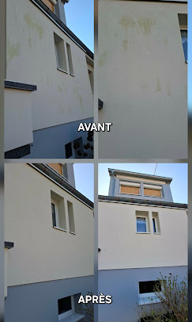
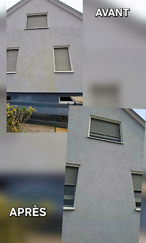
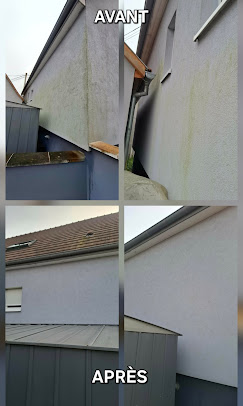
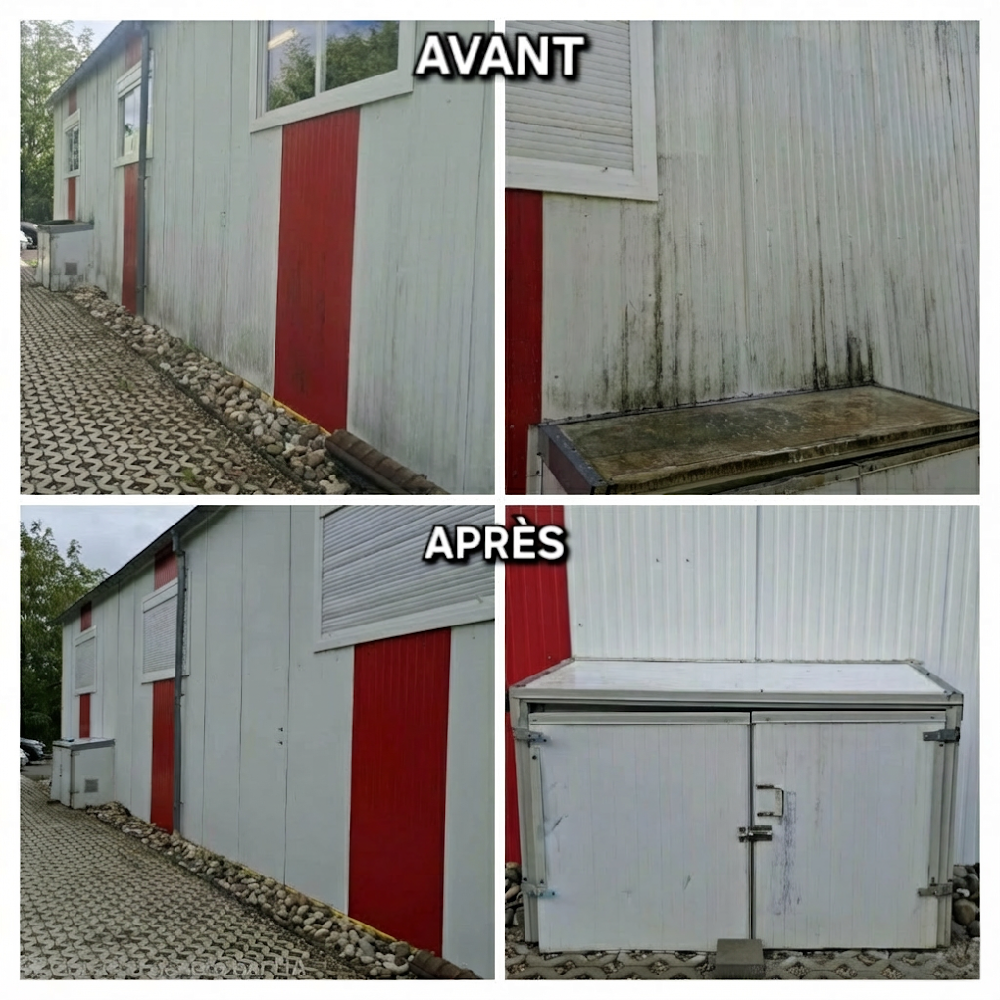

Nos chantiers
Nos réalisations en Alsace
Des photos réelles, prises sur nos chantiers. Façades débarrassées des algues, toitures démoussées, bâtiments professionnels remis à neuf. La meilleure preuve de notre savoir-faire reste le résultat.






Aucune réalisation dans cette catégorie pour le moment.
Et si la prochaine réalisation était chez vous ?
Envoyez-nous une photo de votre toiture ou de votre façade. Nous vous répondons avec un devis gratuit.